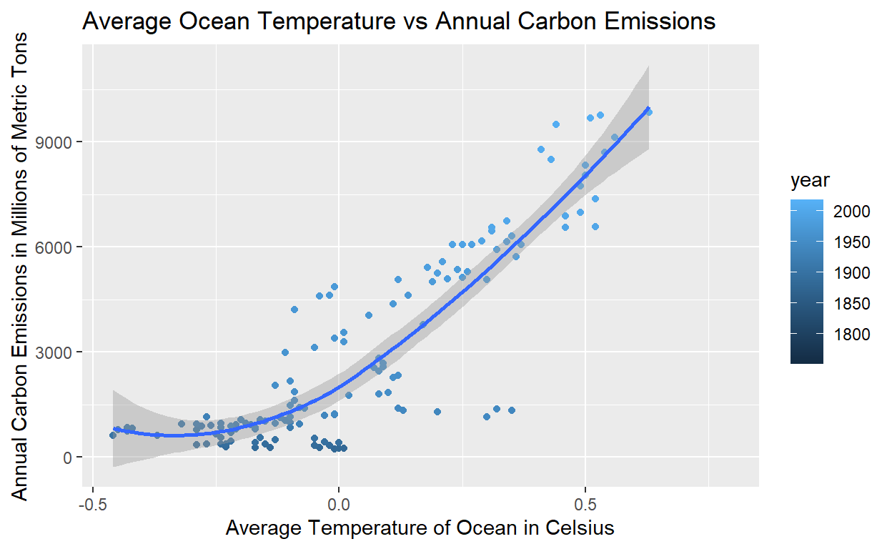

Impact of Climate Change Through Carbon Emissions and their Impact on Temperature
I became interest in the climate change conversation as Harvard was my true introduction to the topic due to my school not prioritizing the education of this issue (I went to a low-income public high school and our curriculum was truly all over the place). I had no clue about the impact of carbon emissions and how they contributed to the warming of the Earth and wanted to do research to see how it impacted various parts of our planet.
My research question is “How does Carbon Emissions affect global temperatures of the atmosphere, land and ocean?”. As carbon emissions increase, I hypothesize that there will be a corresponding rise in temperatures across the atmosphere, land, and oceans. This hypothesis is grounded in the well-established relationship between increased levels of carbon dioxide (CO2) leading to heat retention in the Earth’s atmosphere. This phenomenon is expected to contribute to elevated temperatures in the oceans, atmosphere, and on land.” The explanatory variable in this research would be the carbon emissions and the outcome variable the average temperature of the ocean, land, and atmosphere. The observed pattern in my data would prove my hypothesis correct if we see a increase in temperatures as carbon emissions increase. My hypothesis would be disapproved if we saw a decrease in temperatures if carbon emissions increase.
My original data was taken from the Carbon Dioxide Information Analysis Center. The variables were Year (1751-2018), temp_anomaly, land_anomaly, ocean_anomaly, carbon_emissions. The dataset was originally used for data collection, to find trends between carbon emissions and the rise in temperature and were asked to report these findings to the United States government.
The independent variable in this data is the carbon/carbon emissions and the dependent variable of interest is the temperature of the ocean, land, and atmosphere. Because my report desires to identify a relationship between the emissions and the temperature, I am utilizing a correlation research design.
Within the first graph which focuses on Global Average Temperature, there is a positive correlation between the temperature rising and carbon emissions increasing. In more recent years, specifically after the 1900s, you see that the temperatures have skyrocketed. In the second graph, which details Land Temperature, we also see a correlation between carbon emissions and the land temperature. The trends are also very similar as far as the relationship between the year and the rate in which the temperature increases. In the last graph, we see the same mirroring patterns of the the previous graphs, which shows that the Oceanic temperatures increase that as the surge in carbon emissions does. The main coefficient of interest is the carbon emissions as we are looking to see if there is variability within the regression data.
rownames year temp_anomaly land_anomaly ocean_anomaly
1 1 1880 -0.11 -0.48 -0.01
2 2 1881 -0.08 -0.40 0.01
3 3 1882 -0.10 -0.48 0.00
4 4 1883 -0.18 -0.66 -0.04
5 5 1884 -0.26 -0.69 -0.14
6 6 1885 -0.25 -0.56 -0.17
7 7 1886 -0.24 -0.51 -0.17
8 8 1887 -0.28 -0.47 -0.23
9 9 1888 -0.13 -0.41 -0.05
10 10 1889 -0.09 -0.31 -0.02
11 11 1890 -0.34 -0.51 -0.29
12 12 1891 -0.25 -0.52 -0.15
13 13 1892 -0.30 -0.49 -0.23
14 14 1893 -0.32 -0.54 -0.24
15 15 1894 -0.30 -0.38 -0.27
16 16 1895 -0.23 -0.39 -0.17
17 17 1896 -0.09 -0.33 0.00
18 18 1897 -0.09 -0.26 -0.03
19 19 1898 -0.26 -0.37 -0.22
20 20 1899 -0.15 -0.21 -0.13
21 21 1900 -0.07 -0.15 -0.05
22 22 1901 -0.15 -0.12 -0.16
23 23 1902 -0.25 -0.26 -0.24
24 24 1903 -0.37 -0.37 -0.37
25 25 1904 -0.45 -0.44 -0.46
26 26 1905 -0.27 -0.33 -0.25
27 27 1906 -0.21 -0.17 -0.22
28 28 1907 -0.38 -0.62 -0.29
29 29 1908 -0.43 -0.44 -0.43
30 30 1909 -0.44 -0.43 -0.45
31 31 1910 -0.40 -0.36 -0.42
32 32 1911 -0.44 -0.48 -0.43
33 33 1912 -0.34 -0.48 -0.28
34 34 1913 -0.32 -0.31 -0.32
35 35 1914 -0.14 -0.06 -0.17
36 36 1915 -0.09 -0.08 -0.10
37 37 1916 -0.32 -0.46 -0.26
38 38 1917 -0.40 -0.63 -0.29
39 39 1918 -0.30 -0.50 -0.21
40 40 1919 -0.25 -0.33 -0.21
41 41 1920 -0.23 -0.36 -0.18
42 42 1921 -0.16 -0.15 -0.17
43 43 1922 -0.25 -0.27 -0.24
44 44 1923 -0.25 -0.29 -0.24
45 45 1924 -0.24 -0.25 -0.24
46 46 1925 -0.18 -0.15 -0.19
47 47 1926 -0.07 -0.02 -0.10
48 48 1927 -0.17 -0.22 -0.16
49 49 1928 -0.18 -0.15 -0.20
50 50 1929 -0.33 -0.49 -0.27
51 51 1930 -0.11 -0.13 -0.11
52 52 1931 -0.06 -0.02 -0.08
53 53 1932 -0.13 -0.03 -0.17
54 54 1933 -0.26 -0.36 -0.22
55 55 1934 -0.11 -0.06 -0.13
56 56 1935 -0.16 -0.17 -0.15
57 57 1936 -0.12 -0.12 -0.12
58 58 1937 -0.01 -0.02 -0.01
59 59 1938 -0.02 0.17 -0.10
60 60 1939 0.01 0.10 -0.03
61 61 1940 0.16 0.07 0.20
62 62 1941 0.27 0.10 0.35
63 63 1942 0.11 0.06 0.13
64 64 1943 0.11 0.07 0.12
65 65 1944 0.28 0.19 0.32
66 66 1945 0.18 -0.07 0.30
67 67 1946 -0.01 -0.01 -0.01
68 68 1947 -0.04 0.04 -0.07
69 69 1948 -0.05 0.05 -0.10
70 70 1949 -0.07 -0.07 -0.08
71 71 1950 -0.15 -0.32 -0.09
72 72 1951 0.00 -0.06 0.02
73 73 1952 0.05 -0.05 0.08
74 74 1953 0.13 0.20 0.10
75 75 1954 -0.10 -0.12 -0.09
76 76 1955 -0.13 -0.11 -0.13
77 77 1956 -0.18 -0.40 -0.10
78 78 1957 0.07 -0.04 0.11
79 79 1958 0.13 0.15 0.12
80 80 1959 0.08 0.09 0.08
81 81 1960 0.05 0.00 0.07
82 82 1961 0.10 0.12 0.09
83 83 1962 0.11 0.16 0.09
84 84 1963 0.12 0.21 0.08
85 85 1964 -0.14 -0.22 -0.11
86 86 1965 -0.07 -0.12 -0.05
87 87 1966 -0.01 -0.05 0.01
88 88 1967 0.00 0.01 -0.01
89 89 1968 -0.03 -0.11 0.01
90 90 1969 0.11 -0.08 0.17
91 91 1970 0.06 0.05 0.06
92 92 1971 -0.07 -0.02 -0.09
93 93 1972 0.04 -0.17 0.11
94 94 1973 0.19 0.34 0.14
95 95 1974 -0.06 -0.18 -0.02
96 96 1975 0.01 0.14 -0.04
97 97 1976 -0.07 -0.23 -0.01
98 98 1977 0.21 0.25 0.19
99 99 1978 0.12 0.10 0.12
100 100 1979 0.23 0.17 0.24
101 101 1980 0.28 0.31 0.26
102 102 1981 0.32 0.52 0.25
103 103 1982 0.19 0.11 0.22
104 104 1983 0.36 0.50 0.30
105 105 1984 0.17 0.06 0.20
106 106 1985 0.16 0.10 0.18
107 107 1986 0.23 0.30 0.21
108 108 1987 0.38 0.45 0.36
109 109 1988 0.39 0.58 0.32
110 110 1989 0.29 0.36 0.27
111 111 1990 0.45 0.66 0.37
112 112 1991 0.39 0.53 0.34
113 113 1992 0.24 0.24 0.23
114 114 1993 0.28 0.35 0.25
115 115 1994 0.34 0.48 0.29
116 116 1995 0.47 0.78 0.35
117 117 1996 0.32 0.35 0.31
118 118 1997 0.51 0.64 0.46
119 119 1998 0.65 0.98 0.52
120 120 1999 0.44 0.78 0.31
121 121 2000 0.42 0.62 0.34
122 122 2001 0.57 0.84 0.46
123 123 2002 0.62 0.95 0.49
124 124 2003 0.63 0.94 0.52
125 125 2004 0.58 0.81 0.49
126 126 2005 0.66 1.08 0.50
127 127 2006 0.63 0.97 0.50
128 128 2007 0.61 1.12 0.43
129 129 2008 0.54 0.89 0.41
130 130 2009 0.64 0.90 0.54
131 131 2010 0.72 1.14 0.56
132 132 2011 0.57 0.91 0.44
133 133 2012 0.63 0.95 0.51
134 134 2013 0.67 1.03 0.53
135 135 2014 0.73 1.01 0.63
136 136 2015 0.92 1.39 0.75
137 137 2016 0.98 1.50 0.79
138 138 2017 0.90 1.38 0.72
139 139 2018 0.82 1.18 0.68
140 140 1751 NA NA NA
141 141 1752 NA NA NA
142 142 1753 NA NA NA
143 143 1754 NA NA NA
144 144 1755 NA NA NA
145 145 1756 NA NA NA
146 146 1757 NA NA NA
147 147 1758 NA NA NA
148 148 1759 NA NA NA
149 149 1760 NA NA NA
150 150 1761 NA NA NA
151 151 1762 NA NA NA
152 152 1763 NA NA NA
153 153 1764 NA NA NA
154 154 1765 NA NA NA
155 155 1766 NA NA NA
156 156 1767 NA NA NA
157 157 1768 NA NA NA
158 158 1769 NA NA NA
159 159 1770 NA NA NA
160 160 1771 NA NA NA
161 161 1772 NA NA NA
162 162 1773 NA NA NA
163 163 1774 NA NA NA
164 164 1775 NA NA NA
165 165 1776 NA NA NA
166 166 1777 NA NA NA
167 167 1778 NA NA NA
168 168 1779 NA NA NA
169 169 1780 NA NA NA
170 170 1781 NA NA NA
171 171 1782 NA NA NA
172 172 1783 NA NA NA
173 173 1784 NA NA NA
174 174 1785 NA NA NA
175 175 1786 NA NA NA
176 176 1787 NA NA NA
177 177 1788 NA NA NA
178 178 1789 NA NA NA
179 179 1790 NA NA NA
180 180 1791 NA NA NA
181 181 1792 NA NA NA
182 182 1793 NA NA NA
183 183 1794 NA NA NA
184 184 1795 NA NA NA
185 185 1796 NA NA NA
186 186 1797 NA NA NA
187 187 1798 NA NA NA
188 188 1799 NA NA NA
189 189 1800 NA NA NA
190 190 1801 NA NA NA
191 191 1802 NA NA NA
192 192 1803 NA NA NA
193 193 1804 NA NA NA
194 194 1805 NA NA NA
195 195 1806 NA NA NA
196 196 1807 NA NA NA
197 197 1808 NA NA NA
198 198 1809 NA NA NA
199 199 1810 NA NA NA
200 200 1811 NA NA NA
201 201 1812 NA NA NA
202 202 1813 NA NA NA
203 203 1814 NA NA NA
204 204 1815 NA NA NA
205 205 1816 NA NA NA
206 206 1817 NA NA NA
207 207 1818 NA NA NA
208 208 1819 NA NA NA
209 209 1820 NA NA NA
210 210 1821 NA NA NA
211 211 1822 NA NA NA
212 212 1823 NA NA NA
213 213 1824 NA NA NA
214 214 1825 NA NA NA
215 215 1826 NA NA NA
216 216 1827 NA NA NA
217 217 1828 NA NA NA
218 218 1829 NA NA NA
219 219 1830 NA NA NA
220 220 1831 NA NA NA
221 221 1832 NA NA NA
222 222 1833 NA NA NA
223 223 1834 NA NA NA
224 224 1835 NA NA NA
225 225 1836 NA NA NA
226 226 1837 NA NA NA
227 227 1838 NA NA NA
228 228 1839 NA NA NA
229 229 1840 NA NA NA
230 230 1841 NA NA NA
231 231 1842 NA NA NA
232 232 1843 NA NA NA
233 233 1844 NA NA NA
234 234 1845 NA NA NA
235 235 1846 NA NA NA
236 236 1847 NA NA NA
237 237 1848 NA NA NA
238 238 1849 NA NA NA
239 239 1850 NA NA NA
240 240 1851 NA NA NA
241 241 1852 NA NA NA
242 242 1853 NA NA NA
243 243 1854 NA NA NA
244 244 1855 NA NA NA
245 245 1856 NA NA NA
246 246 1857 NA NA NA
247 247 1858 NA NA NA
248 248 1859 NA NA NA
249 249 1860 NA NA NA
250 250 1861 NA NA NA
251 251 1862 NA NA NA
252 252 1863 NA NA NA
253 253 1864 NA NA NA
254 254 1865 NA NA NA
255 255 1866 NA NA NA
256 256 1867 NA NA NA
257 257 1868 NA NA NA
258 258 1869 NA NA NA
259 259 1870 NA NA NA
260 260 1871 NA NA NA
261 261 1872 NA NA NA
262 262 1873 NA NA NA
263 263 1874 NA NA NA
264 264 1875 NA NA NA
265 265 1876 NA NA NA
266 266 1877 NA NA NA
267 267 1878 NA NA NA
268 268 1879 NA NA NA
carbon_emissions
1 236
2 243
3 256
4 272
5 275
6 277
7 281
8 295
9 327
10 327
11 356
12 372
13 374
14 370
15 383
16 406
17 419
18 440
19 465
20 507
21 534
22 552
23 566
24 617
25 624
26 663
27 707
28 784
29 750
30 785
31 819
32 836
33 879
34 943
35 850
36 838
37 901
38 955
39 936
40 806
41 932
42 803
43 845
44 970
45 963
46 975
47 983
48 1062
49 1065
50 1145
51 1053
52 940
53 847
54 893
55 973
56 1027
57 1130
58 1209
59 1142
60 1192
61 1299
62 1334
63 1342
64 1391
65 1383
66 1160
67 1238
68 1392
69 1469
70 1419
71 1630
72 1767
73 1795
74 1841
75 1865
76 2042
77 2177
78 2270
79 2330
80 2454
81 2569
82 2580
83 2686
84 2833
85 2995
86 3130
87 3288
88 3393
89 3566
90 3780
91 4053
92 4208
93 4376
94 4614
95 4623
96 4596
97 4864
98 5016
99 5074
100 5357
101 5301
102 5138
103 5094
104 5075
105 5258
106 5417
107 5583
108 5725
109 5936
110 6066
111 6074
112 6142
113 6078
114 6070
115 6174
116 6305
117 6448
118 6556
119 6576
120 6561
121 6733
122 6893
123 6994
124 7376
125 7743
126 8042
127 8336
128 8503
129 8776
130 8697
131 9128
132 9503
133 9673
134 9773
135 9855
136 NA
137 NA
138 NA
139 NA
140 3
141 3
142 3
143 3
144 3
145 3
146 3
147 3
148 3
149 3
150 3
151 3
152 3
153 3
154 3
155 3
156 3
157 3
158 3
159 3
160 4
161 4
162 4
163 4
164 4
165 4
166 4
167 4
168 4
169 4
170 5
171 5
172 5
173 5
174 5
175 5
176 5
177 5
178 5
179 5
180 6
181 6
182 6
183 6
184 6
185 6
186 7
187 7
188 7
189 8
190 8
191 10
192 9
193 9
194 9
195 10
196 10
197 10
198 10
199 10
200 11
201 11
202 11
203 11
204 12
205 13
206 14
207 14
208 14
209 14
210 14
211 15
212 16
213 16
214 17
215 17
216 18
217 18
218 18
219 24
220 23
221 23
222 24
223 24
224 25
225 29
226 29
227 30
228 31
229 33
230 34
231 36
232 37
233 39
234 43
235 43
236 46
237 47
238 50
239 54
240 54
241 57
242 59
243 69
244 71
245 76
246 77
247 78
248 83
249 91
250 95
251 97
252 104
253 112
254 119
255 122
256 130
257 135
258 142
259 147
260 156
261 173
262 184
263 174
264 188
265 191
266 194
267 196
268 210library(ggplot2)
ggplot(data = carbon,
mapping = aes(x = temp_anomaly,
y = carbon_emissions,
color = year)) +
geom_point() + geom_smooth() +
labs(x = "Global Average Temperature in Celsius",
y = "Annual Carbon Emissions in Millions of Metric Tons",
title = "Global Average Temp vs Annual Carbon Emissions")ggplot(data = carbon,
mapping = aes(x = land_anomaly,
y = carbon_emissions,
color = year)) +
geom_point() + geom_smooth() +
labs(x = "Average Temperature of Land in Celsius",
y = "Annual Carbon Emissions in Millions of Metric Tons",
title = "Average Land Temperature vs Annual Carbon Emissions")ggplot(data = carbon,
mapping = aes(x = ocean_anomaly,
y = carbon_emissions,
color = year)) +
geom_point() + geom_smooth() +
labs(x = "Average Temperature of Ocean in Celsius",
y = "Annual Carbon Emissions in Millions of Metric Tons",
title = "Average Ocean Temperature vs Annual Carbon Emissions")
carbon_fit <- lm(carbon_emissions ~ land_anomaly + temp_anomaly + ocean_anomaly,
data = carbon)
var_labels <- c(
"(Intercept)" = "Intercept",
"land_anomaly" = "Avg Land Temp",
"temp_anomaly" = "Global Avg Temp",
"ocean_anomaly" = "Avg Ocean Temp"
)
modelsummary::modelsummary(carbon_fit,
statistic = c("s.e. = {std.error}",
"p = {p.value}"),
coef_map = var_labels,
gof_map = c("nobs", "r.squared", "adj.r.squared"))| (1) | |
|---|---|
| Intercept | 2720.324 |
| s.e. = 105.530 | |
| p = <0.001 | |
| Avg Land Temp | 4113.570 |
| s.e. = 3615.705 | |
| p = 0.257 | |
| Global Avg Temp | −744.155 |
| s.e. = 13729.846 | |
| p = 0.957 | |
| Avg Ocean Temp | 3495.425 |
| s.e. = 10238.249 | |
| p = 0.733 | |
| Num.Obs. | 135 |
| R2 | 0.828 |
| R2 Adj. | 0.824 |
The linear regression shows that at the start of the experiment, carbon emissions were 2720.3. As the average land temperature increases by 1 degree Celsius, the carbon emissions amount increases on average by 4113 million metric tons.. For the average global temperature, as it increases by 1 degree celsius, carbon emissions decrease by -744.155 million metric tons. As the Average Ocean Temperature increases by 1, the carbon emissions increase on average by 3495.4 million metric tons. Since the p value in the Ocean and Global Average Temp graphs are above 0.5 we do not reject the null hypothesis, meaning that it is not statistically significant. Since the Land Average Temp Graph has a p.value of 0.2, we do reject the null hypothesis meaning that it is statistically significant. We can interpret it casually because there as there is a higher presence of carbon emissions, we also see an increase in temperature which shows that there is a correlation. Higher carbon dioxide means that there is more heat being radiated which is also reflected as the Earth ages.
According to the results of the linear regression analysis, there are clear relationships between temperature changes and carbon emissions across various environmental systems. Carbon emissions were initially recorded at 2720.3 million metric tons. The analysis shows that with every 1-degree Celsius increase in average land temperature, there is an average increase of 4113 million metric tons in carbon emissions. Interestingly, a 1-degree Celsius increase in global temperature leads to an average decrease of -744.155 million metric tons in carbon emissions. Finally, when the average ocean temperature increases by 1-degree Celsius, there is an average increase of 3495.4 million metric tons in carbon emissions. The findings from my data suggest that changes in land temperature exhibit a statistically significant relationship with alterations in carbon emissions (p-value = 0.2), supporting the hypothesis that increased land temperature correlates with higher carbon emissions. However, for global and ocean temperatures, the p-values exceed 0.5, indicating that these relationships are not statistically significant based on my current analysis. One limitation could be the possibility presence of confounding variables not accounted for in the analysis, such as other factors influencing carbon emissions and temperature changes that are not noted in this data. There is also a potential missing of data as I am sure a lot of the reporting could not encapsulate the actual truth of these factors. One way I could improve my analysis if I had the opportunity to would be to explore other factors that contribute to the rises of temperature to see if there is a true correlation between the carbon emissions and the warming of the ocean, land and overall atmosphere.